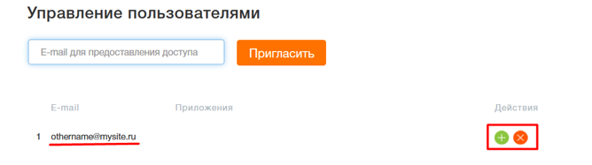
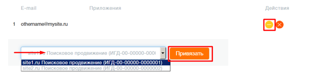

Как настроить доступ приглашенного пользователя к вашим приложениям?
Управлять доступом приглашенного пользователя к вашим приложениям можно на странице «Управление пользователями»

Нажмите на кнопку + для редактирования приложений. В выпадающем списке ваших приложений выберите приложение, доступ к которому вы желаете предоставить и нажмите кнопку «Привязать»

Для того, чтобы закрыть доступ пользователю нажмите на крестик напротив нужного приложения.